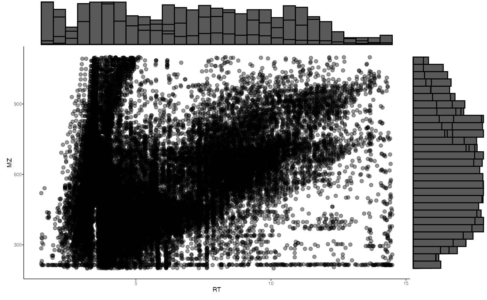

massSight combine iHMP and PRISM metabolites (IBD studies)
2023-07-07
Source:vignettes/massSight_iHMP_PRISM.Rmd
massSight_iHMP_PRISM.Rmd
knitr::opts_chunk$set(echo = TRUE)
install.packages("devtools")
devtools::install_github("omicsEye/massSight")read data
- iHMP publication: https://doi.org/10.1038/s41586-019-1237-9
- Data at: https://www.metabolomicsworkbench.org/data/DRCCStudySummary.php?Mode=SetupRawDataDownload&StudyID=ST000923 and https://ibdmdb.org/tunnel/public/summary.html
We have consolidated the data from the two sources and created a single excel file for each method (HILIC-pos, HILIC-neg, C18-neg, C8-pos), which can be downloaded from the following link: https://gwu.box.com/s/i8fxlre70b0sbrdhp9sjjfautlmlwd6x
- PRISM pubcliation: https://doi.org/10.1038/s41564-018-0306-4
- Data at: https://www.metabolomicsworkbench.org/data/DRCCStudySummary.php?Mode=SetupRawDataDownload&StudyID=ST001000
The PRISM data can be downloaded from the following link: https://gwu.box.com/s/033vt0ieh3gucaw5f9as3fuvna7h1b4t
Load iHMP data
loaded_data <-
massSight::load_data(
input = "path/to/your/iHMP_data.xlsx",
type = "all",
sheet = 1,
id = "Compound_ID"
)
loaded_data$feature_metadata$MZ <-
as.numeric(loaded_data$feature_metadata$MZ)
loaded_data$feature_metadata$RT <-
as.numeric(loaded_data$feature_metadata$RT)
feature_metadata2 <-
loaded_data$feature_metadata[colnames(loaded_data$data), ]
feature_metadata2$Intensity <- colMeans(loaded_data$data, na.rm = T)
feature_metadata <- cbind(feature_metadata2, t(loaded_data$data))
ref_input <-
feature_metadata2[!is.na(feature_metadata2$MZ) &
!is.na(feature_metadata2$RT), ]load PRISM clustered data as main output
PRISM <-
massSight::load_data(
input = "path/to/your/PRISM_data.xlsx",
type = "all",
sheet = 1,
id = "Compound_ID"
)
PRISM$feature_metadata$MZ <-
as.numeric(PRISM$feature_metadata$MZ)
PRISM$feature_metadata$RT <-
as.numeric(PRISM$feature_metadata$RT)
feature_metadata2 <-
PRISM$feature_metadata[colnames(PRISM$data), ]
feature_metadata2$Intensity <- colMeans(PRISM$data, na.rm = T)
feature_metadata <- cbind(feature_metadata2, t(PRISM$data))
PRISM_input <-
feature_metadata2[!is.na(feature_metadata2$MZ) &
!is.na(feature_metadata2$RT), ]
PRISM_Methods <- sapply(str_split(PRISM_input$Compound_ID, "_"), "[[", 1)
PRISM_input$Method <- PRISM_MethodsApproach 1: iHMP vs. PRISM method by method
Create an object for iHMP data as reference for alignment and combining
aligned_df <- vector(mode = "list", length = 4)
profiling_methods <- c("HILIC-neg", "HILIC-pos", "C18-neg", "C8-pos")
names(aligned_df) <- profiling_methods
ref <- query <- final_smooth <- aligned_df
for (profiling_method in profiling_methods) {
ref[[profiling_method]] <-
create_ms_obj(
df = ref_input[ref_input$Method == profiling_method, ],
name = "iHMP",
id_name = "Compound_ID",
rt_name = "RT",
mz_name = "MZ",
int_name = "Intensity"
)
query[[profiling_method]] <-
create_ms_obj(
df = PRISM_input[PRISM_input$Method == profiling_method, ],
name = "PRISM",
id_name = "Compound_ID",
rt_name = "RT",
mz_name = "MZ",
int_name = "Intensity"
)
# create and save distribution of MZ and RT of features
ms1_distr <- massSight::distribution_plot(query[[profiling_method]])
ms2_distr <- massSight::distribution_plot(ref[[profiling_method]])
print(ms1_distr)
print(ms2_distr)
}
These plots can be saved locally as well.
ggsave(
filename = paste0("analysis/iHMP_PRISM/PRISM_", profiling_method, "_query_distr_plot.png"),
plot = ms1_distr,
width = 5,
height = 5,
units = "in",
dpi = 300,
create.dir = TRUE
)
ggsave(
filename = paste0("analysis/iHMP_PRISM/iHMP_", profiling_method, "_ref_distr_plot.png"),
plot = ms2_distr,
width = 5,
height = 5,
units = "in",
dpi = 300,
create.dir = TRUE
)
}
for (profiling_method in profiling_methods) {
print(profiling_method)
aligned_df[[profiling_method]] <-
auto_combine(ref[[profiling_method]], query[[profiling_method]], smooth_method = "gam", log = NULL)
}View and write
for (profiling_method in profiling_methods) {
write.table(aligned_df[[profiling_method]]@all_matched, file = paste0("analysis/iHMP_PRISM/iHMP_PRISM_", profiling_method, "_excel.tsv"), quote = FALSE, sep = "\t", row.names = FALSE)
}Visualization
for (profiling_method in profiling_methods) {
final_smooth[[profiling_method]] <- final_plots(aligned_df[[profiling_method]])
print(final_smooth[[profiling_method]])
ggsave(
filename = paste0("analysis/iHMP_PRISM/iHMP_vs_all_PRISM_excel_", profiling_method, "_massSight_plots.png"),
plot = final_smooth[[profiling_method]],
width = 5,
height = 5,
units = "in",
dpi = 300,
create.dir = TRUE
)
}
for (profiling_method in profiling_methods) {
write.table(aligned_df[[profiling_method]]@all_matched,
file = paste0("analysis/iHMP_PRISM/iHMP_PRISM_", profiling_method, "_excel.tsv"),
quote = FALSE, sep = "\t", row.names = FALSE
)
}